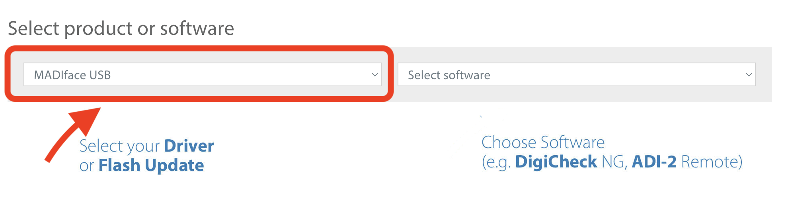
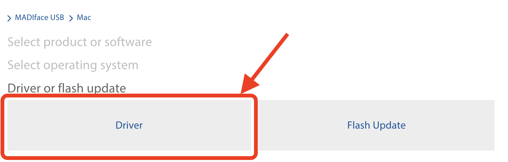
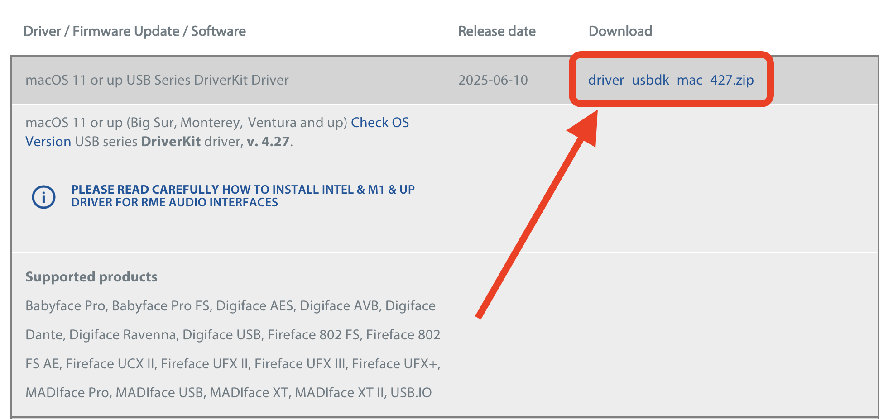
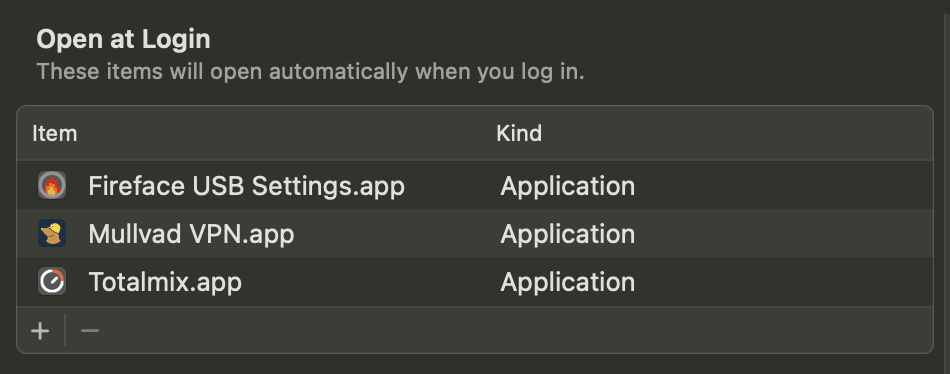

MPAP ROOM GUIDES
Back to Room Guides

First Time Installation
Download RME Driver
- • Navigate to the RME downloads page: rme-audio.de/downloads.html
-
• Under "Select Product or Software", choose MadiFace USB in the left dialog box.

-
• Select your operating system, and then select "Driver".

-
• Download only the latest DriverKit Driver. Ignore "Kernel Extension Driver".

- • After installation, you should have both Totalmix and FireFace USB Settings in your Applications folder.
After Installation
- • Open both TotalMix and FireFace USB Settings applications.
- Go to System Preferences.
- Navigate to Login Items & Extensions.
- Click Open at Login.
- Add both applications via the '+' button.
- • Download the TotalMix2025.tmws file from this link. This is the template for the Research Lab.
- • In TotalMix, go to File > Load Workspace, and load the TotalMix2025.tmws file you just downloaded. TotalMix is now configured for the Research Lab.
Important Note
Due to a known DriverKit bug, audio may not play until both Totalmix and FireFace USB Settings windows have been opened. You may want to force them to automatically open every time your computer starts up.
To set up auto-start:
